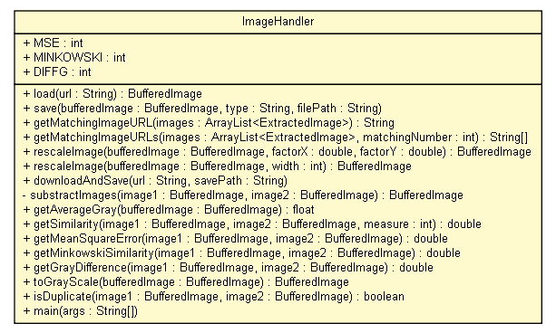

tud.iir.multimedia
Class ImageHandler

java.lang.Object
 tud.iir.multimedia.ImageHandler
tud.iir.multimedia.ImageHandler
public class ImageHandler
- extends java.lang.Object
A handler for images.
|
Field Summary |
static int |
DIFFG
image similarity with image difference and average gray values |
static int |
MINKOWSKI
image similarity with minkowsi |
static int |
MSE
image similarity mean square error |
|
Method Summary |
static void |
downloadAndSave(java.lang.String url,
java.lang.String savePath)
|
static float |
getAverageGray(java.awt.image.BufferedImage bufferedImage)
|
static double |
getGrayDifference(java.awt.image.BufferedImage image1,
java.awt.image.BufferedImage image2)
|
static java.lang.String |
getMatchingImageURL(java.util.ArrayList<ExtractedImage> images)
|
static java.lang.String[] |
getMatchingImageURLs(java.util.ArrayList<ExtractedImage> images,
int matchingNumber)
|
static double |
getMeanSquareError(java.awt.image.BufferedImage image1,
java.awt.image.BufferedImage image2)
|
static double |
getMinkowskiSimilarity(java.awt.image.BufferedImage image1,
java.awt.image.BufferedImage image2)
|
static double |
getSimilarity(java.awt.image.BufferedImage image1,
java.awt.image.BufferedImage image2,
int measure)
|
static boolean |
isDuplicate(java.awt.image.BufferedImage image1,
java.awt.image.BufferedImage image2)
|
static java.awt.image.BufferedImage |
load(java.lang.String url)
|
static void |
main(java.lang.String[] args)
|
static java.awt.image.BufferedImage |
rescaleImage(java.awt.image.BufferedImage bufferedImage,
double factorX,
double factorY)
|
static java.awt.image.BufferedImage |
rescaleImage(java.awt.image.BufferedImage bufferedImage,
int width)
|
static void |
save(java.awt.image.BufferedImage bufferedImage,
java.lang.String type,
java.lang.String filePath)
|
private static java.awt.image.BufferedImage |
substractImages(java.awt.image.BufferedImage image1,
java.awt.image.BufferedImage image2)
|
static java.awt.image.BufferedImage |
toGrayScale(java.awt.image.BufferedImage bufferedImage)
|
| Methods inherited from class java.lang.Object |
clone, equals, finalize, getClass, hashCode, notify, notifyAll, toString, wait, wait, wait |
MSE
public static final int MSE
- image similarity mean square error
- See Also:
- Constant Field Values
MINKOWSKI
public static final int MINKOWSKI
- image similarity with minkowsi
- See Also:
- Constant Field Values
DIFFG
public static final int DIFFG
- image similarity with image difference and average gray values
- See Also:
- Constant Field Values
ImageHandler
public ImageHandler()
load
public static java.awt.image.BufferedImage load(java.lang.String url)
save
public static void save(java.awt.image.BufferedImage bufferedImage,
java.lang.String type,
java.lang.String filePath)
getMatchingImageURL
public static java.lang.String getMatchingImageURL(java.util.ArrayList<ExtractedImage> images)
getMatchingImageURLs
public static java.lang.String[] getMatchingImageURLs(java.util.ArrayList<ExtractedImage> images,
int matchingNumber)
rescaleImage
public static java.awt.image.BufferedImage rescaleImage(java.awt.image.BufferedImage bufferedImage,
double factorX,
double factorY)
rescaleImage
public static java.awt.image.BufferedImage rescaleImage(java.awt.image.BufferedImage bufferedImage,
int width)
downloadAndSave
public static void downloadAndSave(java.lang.String url,
java.lang.String savePath)
substractImages
private static java.awt.image.BufferedImage substractImages(java.awt.image.BufferedImage image1,
java.awt.image.BufferedImage image2)
getAverageGray
public static float getAverageGray(java.awt.image.BufferedImage bufferedImage)
getSimilarity
public static double getSimilarity(java.awt.image.BufferedImage image1,
java.awt.image.BufferedImage image2,
int measure)
getMeanSquareError
public static double getMeanSquareError(java.awt.image.BufferedImage image1,
java.awt.image.BufferedImage image2)
getMinkowskiSimilarity
public static double getMinkowskiSimilarity(java.awt.image.BufferedImage image1,
java.awt.image.BufferedImage image2)
getGrayDifference
public static double getGrayDifference(java.awt.image.BufferedImage image1,
java.awt.image.BufferedImage image2)
toGrayScale
public static java.awt.image.BufferedImage toGrayScale(java.awt.image.BufferedImage bufferedImage)
isDuplicate
public static boolean isDuplicate(java.awt.image.BufferedImage image1,
java.awt.image.BufferedImage image2)
main
public static void main(java.lang.String[] args)